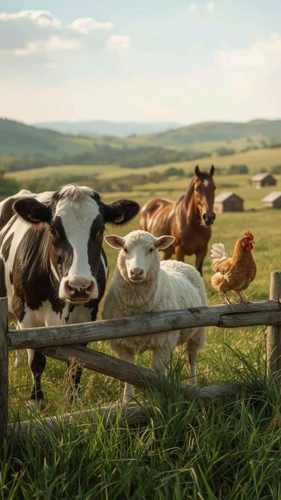

Rolling hills and sun-drenched fields define the quiet rhythm of a working farm. Here, the air carries the scent of fresh-turned earth and drying hay, marking the steady transition between the seasons. From the early morning call of livestock to the rhythmic hum of machinery at harvest, every day is a testament to the deep, enduring connection between the land and those who tend it.